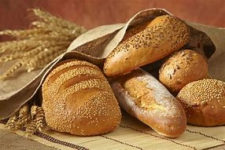

Food
Food has an important role in the culture and cuisine of every country in the world. Different types of food combine to create tasty culinary delights that can bring people together. Food culture often develops by combining local ingredients, different cooking styles, and influences from cuisines from around the world.
This means that most people can eat variety of foods from the many types of cuisines. But what are the building blocks of these dishes? In this article, you will learn about the many different types of foods and about the 7 food categories. You will also find out how many of these basic food staples can be transformed into delicious dishes.
Type of Food
Vegetables:

Vegetables are some of the most important foods we need to consume regularly. Depending on which part of the plant is consumed, the food in the vegetables category is divided into a number of subcategories. There are root vegetables, bulb vegetables, stem, leafy, and podded vegetables.
Some ‘vegetables’ such as tomatoes, cucumbers, and eggplant are actually types of fruit botanically, but in the culinary world are eaten as vegetables.
Root vegetables are some of the most commonly consumed plants. In many cultures, potatoes are an important source of carbohydrates. Potatoes can be boiled, fried, sauteed, or mashed. In Northern Europe and America ‘French fries’ are one of the most popular foods. Also, most restaurants serve potatoes as a side dish. Bulbous vegetables are also important foods in nearly every type of cuisine. Chopped garlic or onions are often fried gently and form the basis of many French, Chinese, Indian, and Mediterranean dishes.
Other important vegetables included in this category are green leafy vegetables. Healthy foods such as fresh lettuce, spinach, and other greens can be mixed with tomatoes, cucumbers, olive oil, and lemon juice to create a Mediterranean salad. In Asian cuisine, bok choy, Chinese lettuce, broccoli, or kale are often stir-fried with other vegetables and meat.
Non-Veg:
There are very few cultures where meat and poultry are not important types of food. Some animals such as cows, pigs, chickens, and lamb are raised specifically for their meat. Others, such as game birds, wild boar, rabbits, and deer, are often hunted. For cooking, meat can be minced, cut into chops, diced, sliced, or roasted as large cuts.
In many Western countries, one of the best kind of food to eat is a rare to medium cooked steak. Even though Westerners tend to eat too much red meat such as beef and pork, hamburgers, meatballs and sausages are popular meal choices. Deep-fried chicken drumsticks or wings are also a popular Sunday lunch in Southern states in the US. Of course, turkeys or chickens roasted whole in the oven are a traditional holiday food in many countries.
Many food cultures also include cured meats in their culinary delicacies. For example, Spain has dry-cured Jamon or Serrano ham, Italy has Parma ham, and in American cuisine, bacon is a popular breakfast staple.
Cookie:
In the wide world of desserts, cookies are perhaps the friendliest and most versatile treat. They can be as simple as shortbread, an elemental combination of flour, sugar, and butter, or as time-intensive and beautiful as these Brown-Butter-Cardamom Spitzbuben, each one featuring a jewel-like cutout of jam. They can be studded with chocolate chips or used to sandwich lemon curd, dulce de leche, or minty white chocolate. You can roll them out and cut them out or just dollop them onto a sheet pan. Perhaps your childhood included a cookie of particular significance to you. Maybe, as was the case for former Food & Wine features editor Nina Friend, your family cookie recipe is so good it spurred the creation of a small business.
No matter which cookies you favor, now's the time to get baking. Cookies are portable and easy to share, while being and endlessly adaptable to suit various tastes and dietary restrictions. You can wrap them up and put them in the mail, and (carefully) deliver them to friends and neighbors less messily than a pie or cake. If your household is small, you can freeze them to ensure holiday baked-goods abundance will stretch into the new year.
We've collected a treasure trove of cookie knowledge, whether it's finding the perfect chocolate chip cookie for your textural needs, figuring out how to roll out dough without getting flour everywhere, hunting down the most aesthetically pleasing cookies, or finding out which cookies to mail order to the folks you won't see holiday season but want to feed. Go forth and cookie.
Bread:
Bread, baked food product made of flour or meal that is moistened, kneaded, and sometimes fermented. A major food since prehistoric times, it has been made in various forms using a variety of ingredients and methods throughout the world. The first bread was made in Neolithic times, nearly 12,000 years ago, probably of coarsely crushed grain mixed with water, with the resulting dough probably laid on heated stones and baked by covering with hot ashes. The Egyptians apparently discovered that allowing wheat doughs to ferment, thus forming gases, produced a light, expanded loaf, and they also developed baking oven
Cake:
he term "cake" has a long history. The word itself is of Viking origin, from the Old Norse word "kaka".
The ancient Greeks called cake πλακοῦς (plakous), which was derived from the word for "flat", πλακόεις (plakoeis). It was baked using flour mixed with eggs, milk, nuts, and honey. They also had a cake called "satura", which was a flat, heavy cake. During the Roman period, the name for cake became "placenta", which was derived from the Greek term. A placenta was baked on a pastry base or inside a pastry case.
The Greeks invented beer as a leavener, frying fritters in olive oil, and cheesecakes using goat's milk. In ancient Rome, the basic bread dough was sometimes enriched with butter, eggs, and honey, which produced a sweet and cake-like baked good. The Latin poet Ovid refers to his and his brother's birthday party and cake in his first book of exile, Tristia.
Early cakes in England were also essentially bread: the most obvious differences between a "cake" and "bread" were the round, flat shape of the cakes and the cooking method, which turned cakes over once while cooking, while bread was left upright throughout the baking process.
Sponge cakes, leavened with beaten eggs, originated during the Renaissance, possibly in Spain.
Food and Mood
Certainly! The connection between food and mood is a fascinating area of study. While the research is still inconclusive, there are intriguing hints that our dietary choices may impact our mental well-being. Let’s explore this further:
Nutrients and Brain Chemistry:
Important nutrients can affect brain chemistry, influencing mood, memory, and cognitive function. Consuming a healthy balance of whole foods that provide a variety of nutrients is associated with feeling calmer, more content, and generally in a better mood
Positive Effects of a Varied, Healthy Diet:
A varied, healthy diet has several benefits: Improved memory and concentration Increased optimism Protection against depression Whole foods, such as fruits, vegetables, and omega-3 fatty acids, play a crucial role in promoting mental health
Caution with Processed and Sugary Foods:
Highly processed, fried foods and sugary food and drinks have been linked to: Increased anxiety Higher risk of developing depression Moderation and mindful choices are essential to maintain a positive mood
Complex Interplay of Factors:
Depression, like many chronic conditions, results from a complex interaction between genetics and environment. While we can study modifiable risk factors associated with depression, it’s challenging to estimate the exact percentage of depression linked to specific dietary factors, as they are interconnected
Food and Emotions
Stress Eating:
We’ve all been there—sitting in front of the TV after a tough day, mindlessly scooping ice cream from the container. Stress eating is a real phenomenon, where our emotions drive us to seek comfort in food. However, the relationship between food and mood disorders, such as depression, remains less clear
Research Hints:
Large observational studies have hinted at links between diet and depression. For instance: A 2005 study found associations between obesity, depression, and dietary factors. A 2011 study revealed that women who consumed more vitamin D–rich foods had a lower risk of depression. A 2014 study associated depression with a diet high in sugar-sweetened soft drinks, refined grains, and red meat. A 2018 meta-analysis suggested that excessive meat consumption might be linked to depression risk
Dopamine Release:
Eating releases dopamine—a brain chemical that makes us feel good. When we’re emotionally low, seeking comfort in food can provide a temporary boost. It becomes a way to cope with difficult emotions, filling an emotional void.
Complex Interaction:
Depression, like many chronic conditions, results from a complex interplay of genetics and environment. While modifiable lifestyle factors (such as diet) may influence depression risk, it’s challenging to pinpoint a specific food or dietary pattern that directly affects it. Factors like smoking, physical activity, and overall lifestyle play interconnected roles.
Food Habits
Good food habit:
Almost all of us love to go out and eat a delicious dish at a restaurant. There are also some days when we order our favorite food at home, and at times we also overeat it! It’s okay if it happens once or twice a month, but you might want to do something if it’s more than that!
You can create delicious and flavorful dishes at home that can be made healthy and have significantly fewer calories. There’s nothing like a balanced home-cooked meal, and there are many simple recipes that you can start with! Remember that the outside food might be tasty, but home food is more wholesome.
Bad food habit:
t's not just what you're eating that can cause weight gain but also how you're eating it. By that, we mean that your eating habits—you know, the things that are so ingrained into our routines that we barely notice we're doing them—play just as much of a role in your weight maintenance as the not-so-great foods you might be eating.
And that's great news because if you can identify those unhealthy eating habits, you can completely change the course of your health for the better. Tweak just a few of these unhealthiest eating habits every day and you could be on your way to a flatter belly in no time! While you're at it, might as well stock up on these 7 Healthiest Foods to Eat Right Now.